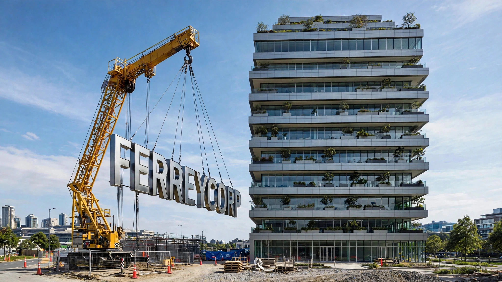

Administración de Negocios · AA2 · Caso Ferreycorp
Actuamos como consultores junior y analizamos cómo Ferreycorp S.A.A. planea, se organiza, dirige y controla. Su propósito declarado: «Juntos creamos desarrollo». Todo el análisis se construyó con fuentes públicas primarias: la Memoria Anual 2024 y los estados financieros consolidados auditados.

La planeación fija el rumbo. En Ferreycorp es un sistema real y medible, no un formalismo.
La organización ordena los recursos y las funciones. El modelo es «autonomía operativa con coherencia estratégica».
La dirección conduce a las personas para que el orden produzca resultados: liderazgo, comunicación, motivación y toma de decisiones.
El control verifica si lo planeado se cumple y corrige el rumbo. En Ferreycorp es integral, comparable y público.
Proponemos 7 mejoras viables, pertinentes y sustentadas. Cada una fortalece dos funciones del proceso administrativo; juntas cubren las cuatro.
Metas fechadas y medibles por pilar estratégico.
Tablero corporativo de venta cruzada «one stop shop».
Mapa de los canales cotidianos de comunicación interna.
Liderazgo y clima medidos por subsidiaria.
Cantera técnica ampliada: ThinkBIG, DreamBIG, aprendizaje dual.
Contratos de servicio recurrentes (CVA) con indicador propio.
Blindaje financiero permanente con cobertura extendida.
La mayor fortaleza y el mayor riesgo de Ferreycorp son el mismo fenómeno visto desde dos ángulos.
El proceso administrativo de Ferreycorp funciona, y su margen de mejora está identificado.
Reflexión de Jerzon Sergio Huamán Rivera sobre la realización de esta actividad.
Gestionar las dificultades identificando oportunidades y fortalezas: así se trabajó este informe y así propone el plan mejorar a Ferreycorp.
Cierre
Ferreycorp aplica el proceso administrativo de forma coherente. Su mayor reto: diversificar sin perder su especialización.
Fuentes públicas primarias: Memoria Anual 2024 de Ferreycorp S.A.A. y estados financieros consolidados auditados. Gracias.